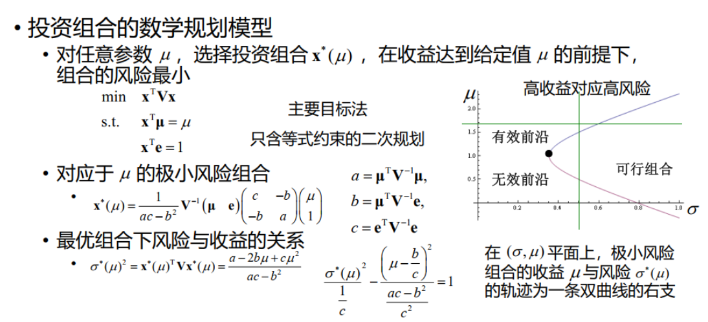

1. 数学规划
约 5223 个字 31 张图片 预计阅读时间 17 分钟
Tag
运筹、优化
运筹学
运筹学的主要分支：
- 数学规划（Mathematical Programming）
- 线性规划（Linear Programming）
- 目标函数为线性函数，约束条件为线性等式或不等式
- 非线性规划（Nonlinear Programming）
- 整数规划（Integer Programming）
- 多目标规划（Multiobjective Programming）
- 组合优化（Combinatorial Optimization）
- 随机运筹
- 排队论（Queuing Theory）
- 库存论（Inventory theory）
- 可靠性理论（Reliability Theory）
- 博弈论（Game Theory）与决策理论（Decision Theory）
数学基础：

数学规划
- 若干个变量在满足一些等式或不等式限制条件下，使目标函数取得最大值或最小值
(条件极值等等，都属于这个范畴)

Tip
- 理论上, 等式约束也可以转换成不等式约束
- 譬如f(x)=0 \(\Rightarrow\) f(x)≥0 && f(x)≤0
- 一般不出现≠

最优解不一定是唯一的，最优值是唯一的，如需求解，求解唯一最优解即可

| 目标函数 \(min\{f(x)\}\) | 约束条件 -- \(g_i(x)≥0 或 h_j(x)=0\) | |
|---|---|---|
| 线性规划 | \(\sum_{i=1}^n c_ix_i\), 即 \(\mathbf{cx}\) | \(\mathbf{Ax=b}\) |
| 二次规划 | \(\sum_{i=1}^n a_ix_i^2\), 即 \(min \{\mathbf{x^T A x}\}\) | \(\mathbf{Ax=b}\) |
| 带二次约束的二次规划 | \(\sum_{i=1}^n a_ix_i^2\), 即 \(min \{\mathbf{x^T A x}\}\) | 线性/二次等式/不等式 |
| 线性分式规划 | \(min\{\frac{\mathbf{cx}+d}{\mathbf{ux}+v}\}\) | \(\mathbf{Ax=b}\) |
整数规划
整数规划（integer programming）：
- 至少有一个决策变量限定取整数值
- 整数决策变量意义
- 用于表示只能取离散值的对象的数量
- 用于表示约束条件之间的逻辑关系或复杂的函数形式
- 用于表示非数值的优化或可行性问题（e.g. 排班问题，难以用数值表示，设整变量）
- 特殊整数规划
- 部分决策变量取整数值的数学规划特称为混合整数规划（Mixed Integer Programming, MIP）
- 0-1规划：决策变量仅取值0或1的数学规划
- 按约束条件
- 无约束优化
- 约束优化


先将x拉成列矩阵，因为线性表示的话，只能\(\mathbf{Ax=b}\)
那么要逐个矩阵相乘,
\(A=\begin{bmatrix}1&1&...&1&|&0&0&...&0&|&0&0&...&0\\0&0&...&0&|&1&1&...&1&|&0&0&...&0\\0&0&...&0&|&0&0&...&0&|&1&1&...&1\\一&一&一&一&|&一&一&一&一&|&一&一&一&一\\1&0&...&0&|&1&0&...&0&|&1&0&...&0\\0&1&...&0&|&0&1&...&0&|&0&1&...&0\\0&0&...&1&|&0&0&...&1&|&0&0&...&1\end{bmatrix}\)
(前四行→行向量，代表\(\sum_{j=1}^n x_{ij}=a_i, i=1, ...,m\) ,后四行→列向量，代表\(\sum_{i=1}^m x_{ij}=b_j\))
\(\mathbf{x}=[x_{11},x_{12},...,x_{1n},x_{21},...,x_{2n},...x{m1},...x_{mn}]^T\)
设\(c_{ij}\)为由产地i到销地j的运输单价
\(x_{ij}\)是
这样构造的方式可以将原先\(n\times n\)的表示变成线性的表示

\(x_{11}≠x_{13} \Rightarrow\) 不等号不允许存在

对任意\(i,j\), \(x_{ij1},x_{ij2}...x_{ij9}\) 中恰有一个取值是1 等效为 \(\sum_{k=1}^9 x_{ijk}=1 ,i,j=1...9\)
(0,1的使用!)
每一行填入的数字各不相同 \(\Rightarrow\) 第i行只有一个数字是k \(\Rightarrow\)
\(\sum_{j=1}^9 x_{ijk}=1\)

番外：条件的表示：
- 假设需要表示条件，第4行1，2列中所填数之和大于5：
-
\(x_{41j_1}=1,x_{41j_2}=1,j_1+j_2=5\)
- 错误1：下标的变量不可以进入约束条件
- 错误3：出现逻辑关系，是在1式和2式满足的情况下，才会出现3
正确的方法：对数字\(k\)而言，\(∵\sum_{k=1}^9=1,∴k=\sum_{k=1}^9 \times k\)，为数字本身
所以

问题背景
现有 W 米长的钢管若干。生产某产品需长为 \(w_i\) 米的短管 \(b_i\) 根，i=1,2,⋯,n,\(n=\sum_{i=1}^{k}b_i\)。如何截取能使材料最省？
决策变量：\(x_{ji}\) 表示第 j 根钢管截取第 i 种短管的数量
约束条件：
\(\sum_{i=1}^k x_{ji}w_i≤W\), 钢管的量有限
\(x_{ji}≥b_i\)
目标函数：
事实上，只要\(\sum_{i=1}^{k}x_{ji}>0\), 使 j 最小
所以定义一个新的0-1变量：
\(y_j=1\),第\(j\)根钢管被截取；0，其他
\(min\sum_{j=1}^n y_j\)

\(\sum_{i=1}^n x_{ji}≤y_i\) 问题：每一根钢管只被截了一次，\(\sum_{i=1}^n x_{ji} ≤ 1\) ×
所以进行改进，把钢管的实际长度加入不等式里，即\(\sum_{i=1}^n x_{ji} \times w_i ≤ W\times y_i\)
\(y_j=1, \Rightarrow \exists i,x_{ji}>0\)
另一种方式：

装箱问题
背景
给定一系列大小已知的物品 和若干个容量相同的箱子， 如何将物品放入箱子中，使所用箱子数尽可能少
三维（即箱子：长\(\times\)宽\(\times\)高）的情况往往不使用数学规划，而是使用启发式算法
选址问题
背景
设在平面上有\(n\)个点，第\(j\)个点的坐标为\((x_j,y_j)\). 求一个面积最小的圆，使这\(n\)个点均为该圆内的点
决策变量：圆心坐标 \((x_0,y_0)\)，圆半径 \(r\)
目标函数：\(r^2\)
约束变量：\((x_j-x_0)^2+(y_j-y_0)^2\leq r^2\)，\(j=1,2,\cdots,n\)
\(\Rightarrow\)二次约束的二次规划类型
化简，展开，\(x_j^2-2x_0x_j+x_j^2+y_j^2-2y_0y_j+y_j^2 \leq r^2\)
因此进行化简\(\rightarrow\)
决策变量改为 \(\lambda=r^2-(x_0^2+y_0^2)\)
目标函数改为 \(\min\lambda+(x_0^2+y_0^2)\)
约束条件改为 \(\lambda+2x_0x_j+2y_0y_j\geq x_j^2+y_j^2\)，\(j=1,2,\cdots,n\)
(思想：通过变形，更容易求解，化二次为一次)
总结
- 自查：
- 是否遗漏问题隐含约束？
- 数学规划（所建立模型的）最优解和问题的最优解是否对应？
- 技巧：
- 复杂目标函数和约束条件的简化
- 0-1变量的灵活运用
时间分配问题
问题背景
有 \(T\) 天时间可用于安排复习 \(n\) 门课程，每天只能复习一门课程，每门课程至少复习一天。用 \(t\) 天时间复习第 \(j\) 门课程可使该门课程提高 \(p_{jt}\) 分。如何制定复习计划可使所有课程提高的总分尽可能大？
| 课程 | 1天 | 2天 | 3天 | 4天 |
|---|---|---|---|---|
| E | 3 | 5 | 6 | 7 |
| C | 5 | 5 | 6 | 9 |
| M | 2 | 4 | 7 | 8 |
| P | 6 | 7 | 9 | 9 |
设第\(j\)门复习了\(t\)天是1，其他是0,设这个是\(\alpha(t)\)
决策变量是\(\alpha_{jt}\)
目标函数 \(\sum_{t=1}^4\sum_{j=1}^4 p_{jt}\alpha_{jt}\)最大
约束条件是，\(\sum_{t=1}^4\sum_{j=1}^4 t\alpha_{jt}\leq T\)
Note
- 决策变量：
- \(x_{jt}\) 表示第 \(j\) 门课程是否复习 \(t\) 天，\(j=1,2,\cdots,n\)，\(t=1,2,\cdots,T\)
- \(x_{jt}=\begin{array}{ll}1,&\text{第j门课程复习t天}\\0,&\text{其他}\end{array}\)
- 目标函数：\(\max\sum\limits_{j=1}^n\sum\limits_{t=1}^Tp_{jt}x_{jt}\)
- 约束条件：\(\sum\limits_{t=1}^Tx_{jt}=1\)；\(\sum\limits_{j=1}^n\sum\limits_{t=1}^Ttx_{jt}\leq T\)
| 课程 | 1天 | 2天 | 3天 | 4天 |
|---|---|---|---|---|
| E | 3 | 5 | 6 | 7 |
| C | 5 | 5 | 6 | 9 |
| M | 2 | 4 | 7 | 8 |
| P | 6 | 7 | 9 | 9 |
动态规划
\(f_j(t)\):用 \(t\) 天时间复习第 \(j\) 门课程可使该门课程提高 \(p_{jt}\) 分
类似递推的方法
\(f_j(t)=max\{p_{js}+f_{j-1}(t-s)\}\) \(p_{js}\)是第\(t\)天提升的分数，\(f_{j-1}(t-s)\)是之前提升的分数
\(f_{j-1}(t)\)可以用同样的方法去做，由此层层递推回到\(f_1(t)\)
Breaks
- Symmetry and separation(对称性和分离性)
- Breaks(出现连续的客场或主场比赛--这是我们不愿看到的)
- The carry-over effect
图的因子分解
图 \(G\) 的因子分解，指将 \(G\) 分解为若干边不重的因子之并——因子指至少包含G的一条边的生成子图。
一个图G的 \(n\) 因子，是指图G的 \(n\) 度正则因子——正则因子指所有顶点的度数都是 \(n\) 的因子。
一个 \(K-8\) 完全图的 1 - 因子分解如下（不同颜色的边表示不同的因子）：


同时，我们也可以根据因子分解，给出主客场的安排（尽量不安排连续的客场或主场比赛），例如第一轮和第二轮中：

根据这条路的开头和结尾，我们给出了主客场的安排。

但我们的第八支队伍还没有安排，但无论怎么安排，都会出现breaks：

这时排出来 6 种break，而这已经是最少的break了，接下来我们给出一般情况下至少有的break数。
安排原则1:满足任何两支球队之间刚好有一场比赛，并且一共就只有四场比赛
安排原则2:尽量少的breaks
问题
对 \(n\)（偶数）支队伍的赛程，用形如 HAH…HA，长度为 \(n-1\)（奇数）的字符串表示每支队伍的主客场安排，称为模式（pattern）求证：\(n\) 支队伍的单循环赛程，全程所有队伍总break数至少为 \(n-2\)
- 首先只有两种可以满足no break:
HAHAHAHA
AHAHAHAH - 其次，证明任意两支队伍都不相同
由于单循环赛制，每两支队伍必须比赛，假设他们的比赛场次是j，则第j次他们不可能同时是H/A
→ 所以只有n-2个break
镜像双循环赛程
\(n\) 支队伍的镜像双循环赛程，全程所有队伍总break数至少为 \(3n-6\)
1. 若半程没有break，则全程也没有break，这样的队伍至多有两支（HAHAH-AHAHA，AHAHA-HAHAH）
2. 若半程有且仅有一个break，由于模式字符串长度为奇数，在前后半程之间有一个break（H A A H A - A H H A H），break数为 \(3\)
3. 若半程有至少两个break，全程break数至少为 \(4\)
所以总break数至少为 \(3(n-2)\)
2+2(n-2)+?
不考虑连续两场比赛的break, 只考虑同一阶段中两场比赛之间的\(double-round break\),
如果不考虑两个阶段的话，是否有一个下界？
结论：小到2(n-4)
- 若半程无break,则全程无break(两支队伍)
- HAAHAHA,则镜像之后，AHHAHAH, 至少要出现两个break
阶段之间→反过来一定是阶段内部
阶段内部→一定阶段之间

法制的 break 数可以到 0 ，最终我们采用法制。
数学规划
我们来到实际问题：有 \(10\) 支队伍，每阶段两场比赛
决策变量：\(x_{ijk}=\begin{cases}1,&\text{第}k\text{轮第}i\text{支队伍在主场对阵第}j\text{支队伍}\\0,&\text{其他}\end{cases}\)
约束条件：
- 无论是主场还是客场，总有一主一客，\(\Rightarrow\) \(x_{ijk}+x_{jik}=1\)
- 任意两队在前后半程各交手一次，\(\sum_{k=1}^{18}x_{ijk}=1\)
- 任一队不连续与种子队（用 \(I_s\) 表示）对阵：\(\sum\limits_{j\in I_s}\left(x_{ijk}+x_{jik}+x_{i,j,k+1}+x_{j,i,k+1}\right)\leq1,\mathrm{~}i\in I\setminus I_s,k=1,\cdots,18\)
1.每支队伍先主后客的总次数尽可能均衡
每支队伍先主后客的总次数尽可能均衡：先定义辅助变量改写这个约束条件。
设\(y_{il}=\begin{cases}1,&\text{第}l\text{阶段第}i\text{支队伍为先主后客}\\0,&\text{第l阶段第}i\text{支队伍为先客后主}\end{cases}\)
要建立y和x之间的联系：
\(x_{ijk}\) 与 \(y_{il}\) 之间的关系：
$y_{il}=1\Leftrightarrow\sum\limits_{j=1}^{10}x_{i,j,2l-1}=1\text{且}\sum\limits_{j=1}^{10}x_{j,i,2l}=1
$
设\(z_i=\sum\limits_{j=1}^{10}x_{i,j,2l-1},z_j=\sum\limits_{j=1}^{10}x_{j,i,2l}\), \(y_{il}=z_i \cdot z_j\)
对此进行线性化：
有约束条件
$\begin{cases}
y_{ij}\leq z_i\y_{ij}\leq z_j\y_{ij}+1≥z_i+z_j
\end{cases}
$
- 若\(y_{ij}=1\) 则\(z_i≥1,z_j≥1\),只能取1
- 若\(z_i,z_j\)取1，则\(y_{ij}+1≥z_i+z_j\),则\(y_{ij}\)只能取1，则满足了当且仅当，且为线性约束
改写一下就是：
$\begin{cases}\sum\limits_{j=1}^{10}\left(x_{i,j,2l-1}+x_{j,i,2l}\right)\leq1+y_{il}\y_{il}\leq\sum\limits_{j=1}^{10}x_{i,j,2l-1}\y_{il}\leq\sum\limits_{j=1}^{10}x_{j,i,2l}\end{cases}
$
- 每支队伍先主后客的总次数尽可能均衡时，\(4\leq\sum\limits_{l=1}^{9}y_{il}\leq5\)，\(i=1,2,\cdots,10\)
2. 各阶段连续客场的次数尽可能少
在法制双循环赛制中 \(x_{i,j,1}=x_{j,i,18}\), \(x_{i,j,k}=x_{j,i,k+8}\), \(k=2,3,\cdots,9\)，\(i,j=1,2,\cdots,10\)，\(i\neq j\)
定义辅助变量 \(w_{il}=\begin{cases}1,&\text{第}l\text{阶段第}i\text{支队伍两场比赛均为客场}\\0,&\text{其他}\end{cases}\)，\(i=1,2,\cdots,10\)，\(l=1,2,\cdots,9\)
\(x_{i,j,k}\) 与 \(w_{il}\) 之间的关系：
$w_{il}=1\Leftrightarrow\sum\limits_{j=1}^{10}x_{j,i,2l-1}=1 \text{且} \sum\limits_{j=1}^{10}x_{j,i,2l}=1
$
改写一下就是：
\(\begin{cases}\sum\limits_{j=1}^{10}\left(x_{j,i,2l-1}+x_{j,i,2l}\right)\leq1+w_{il}\\w_{il}\leq\sum\limits_{j=1}^{10}x_{j,i,2l-1}\\w_{il}\leq\sum\limits_{j=1}^{10}x_{j,i,2l}\end{cases}\)
目标函数 为：\(\min \sum\limits_{i=1}^{10}\sum\limits_{l=1}^{9}w_{il}\)
支持向量机
问题背景
将一数据集 \(S\) 分为 \(C_1,C_2\) 两类，每个数据有 \(n\) 个特征。我们应该如何通过训练集来找出一个超平面，使得它判别效果最好？
我们拟将一数据集 \(S\) 分为 \(C_1,C_2\) 两类。每个数据有 \(n\) 个特征，用 \(n\) 维实向量表示，我们有训练集 \(S'=\{\mathbf{x}_1,\cdots,\mathbf{x}_m\}\)，其中 \(\mathbf{x}_i\in \mathbb{R}^n\)，记 \(y_i=\begin{cases}1, \mathbf{x}_i\in C_1\\-1, \mathbf{x}_i\in C_2\end{cases}\)。
超平面: \(\mathbf{w}\cdot\mathbf{x}+b=0\) (分割的直线s.t.缓冲区尽量的大，则新的数据集不会被误判)

\(\mathbf{w}\)是决策变量
\(y_i=\begin{cases}1, \mathbf{x}_i\in C_1\\-1, \mathbf{x}_i\in C_2\end{cases}\)
- 训练集的数据保持准确：
\(\begin{aligned}&\max \min\limits_{i=1,\cdots,m} |\mathbf{w}\cdot\mathbf{x}_i+b|\\s.t.\quad&y_i(\mathbf{w}\cdot\mathbf{x}_i+b)\geq 0,i=1,\cdots,m \cdots (I)\\&\|\mathbf{w}\|=1\end{aligned}\)
若（1）有解，（1）
\(\begin{aligned}&\max \min\limits_{i=1,\cdots,m} y_i(\mathbf{w}\cdot\mathbf{x}_i+b)\\s.t.\quad &\|\mathbf{w}\|=1\end{aligned}\)
上为2
2包含了1，证明，2的最优解包含在1的内

若\((\mathbf{w_0},b_0)\)是III的最优解，则\((\frac{\mathbf{w_0}}{\sqrt{\mathbf{w_0}\cdot\mathbf{w_0}}},\frac{b_0}{\sqrt{\mathbf{w_0}\cdot\mathbf{w_0}}})\)是II的最优解
证明：
设(\(w^{*},b^*\))为III的最优解，

数学规划求解
线性规划
标准型
- 线性规划的矩阵形式
-
\(min \{\mathbf{cx}\}\), s.t. \(\mathbf{Ax=b},\mathbf{x≥0}\)
-
目标函数极小化
- 决策变量取非负值
- 所有约束均为等式约束，不等式都进行转化
- \(\mathbf{Ax \leq b}, \Leftrightarrow Ax+y=b,y≥0\)
- 线性规划最优解的类型：
- 唯一最优解
- 无穷多最优解
- 无可行解
- 有可行解，但最优值无下解
- exclude！！有限个最优解
设A是行满秩矩阵，\(rank(\mathbf{A})=m\)
\(rank(\mathbf{A})<m\),冗余约束
不妨设\(\mathbf{A}\)的前\(m\)列线性无关
将\(\mathbf{A}\)分块为\(\mathbf{(B,N)}\), 其中
决策变量\(\mathbf{x}\)相应分为{x_b//x_N}分别成为基变量和非基变量
则原来的标准问题转换为\(min cx\)
\(s.t. (B N)(x_b//x_N)=b\)
令\(x_N = 0\)，则\(x_B=B^{-1}b\)则称x=(B-1b//0)是相应基于B的基本解
当B-1b≥0时，x可行，称为基本可行解
线性规划基本定理
若有可行解→必有基本可行解
若有最优解→必有最有基本可行解
即

所以线性规划的最优解，只需要在所有基本可行解中寻找
最多有\(C_m^n\)？？？？？？
单纯形法：从一个基本可行解转到另一个基本可行解，并使目标值下降。迭代有限次，找到最优解或判断最优值无界
单纯形法是指数时间算法。存在含 \(m\) 个变量 \(m\) 个约束的线性规划，单纯形法需要进行 \(2^m-1\) 次迭代
实践表明，对多数线性规划问题，单纯形法迭代次数为变量和约束数的多项式函数
多项式时间算法
1979年，Khachiyan给出了求解线性规划的第一个多项式时间算法 —— 椭球算法。
1984年，Karmarkar给出了实际效果更好的多项式时间算法——内点法，产生了深远的影响
整数线性规划
- 松弛
- 相比线性规划的最优解会小一点

分枝定界法
IP: \(\min -30x_1-36x_2, s.t.\begin{cases}x_1+x_2\leq 6\\5x_1+9x_2\leq 45\\x_1,x_2\geq 0,x_1,x_2\in\mathbb{Z}\end{cases}\)
我们先求解松弛问题：
LP: \(\min -30x_1-36x_2, s.t.\begin{cases}x_1+x_2\leq 6\\5x_1+9x_2\leq 45\\x_1,x_2\geq 0\end{cases}\)
利用线性规划：画图易得，松弛问题的最优解为 \((x_1,x_2)=(\frac{9}{4},\frac{15}{4})\)，目标函数值为 \(-202.5\)
由于最优解不是整数解，我们将松弛问题的可行域分为两个子可行域：
选择最优解中任一不取整值的变量，在（IP）中分别加入一对互斥的约束，形成两个分支：
\(x_1\geq 3,x_1\leq 2\)
把\((\frac{9}{4},\frac{15}{4})\)最优解切掉，从而分别去找两边的最优解：
对于第一个子可行域，我们有：
IP: \(\min -30x_1-36x_2, s.t.\begin{cases}x_1+x_2\leq 6\\5x_1+9x_2\leq 45\\x_1\geq 3\\x_1,x_2\geq 0,x_1,x_2\in\mathbb{Z}\end{cases}\)
LP: \(\min -30x_1-36x_2, s.t.\begin{cases}x_1+x_2\leq 6\\5x_1+9x_2\leq 45\\x_1\geq 3\\x_1,x_2\geq 0\end{cases}\)
画图易得，松弛问题的最优解为 \((x_1,x_2)=(3,3)\)，目标函数值为 \(-198\)。此时为整数解，停止迭代。
对于第二个子可行域，我们有：
IP: \(\min -30x_1-36x_2, s.t.\begin{cases}x_1+x_2\leq 6\\5x_1+9x_2\leq 45\\x_1\leq 2\\x_1,x_2\geq 0,x_1,x_2\in\mathbb{Z}\end{cases}\)
LP: \(\min -30x_1-36x_2, s.t.\begin{cases}x_1+x_2\leq 6\\5x_1+9x_2\leq 45\\x_1\leq 2\\x_1,x_2\geq 0\end{cases}\)
画图易得，松弛问题的最优解为 \((x_1,x_2)=(2,\frac{35}{9})\)，目标函数值为 \(-200\)，此时 \(x_2\) 不是整数，我们将松弛问题的可行域分为两个子可行域：
\(x_2\geq 4,x_2\leq 3\)
对于第一个子可行域，我们有：
IP: \(\min -30x_1-36x_2, s.t.\begin{cases}x_1+x_2\leq 6\\5x_1+9x_2\leq 45\\x_1\leq 2\\x_2\geq 4\\x_1,x_2\geq 0,x_1,x_2\in\mathbb{Z}\end{cases}\)
LP: \(\min -30x_1-36x_2, s.t.\begin{cases}x_1+x_2\leq 6\\5x_1+9x_2\leq 45\\x_1\leq 2\\x_2\geq 4\\x_1,x_2\geq 0\end{cases}\)
画图易得，松弛问题的最优解为 \((x_1,x_2)=(\frac{5}{9},4)\)，目标函数值为 \(-198\)。此时不为整数解，但是继续做下去，函数值只会更大，所以停止迭代。
对于第二个子可行域，我们有：
IP:
$\min -30x_1-36x_2, s.t.\begin{cases}x_1+x_2\leq 6\5x_1+9x_2\leq 45\x_1\leq 2\x_2\leq 3\x_1,x_2\geq 0,x_1,x_2\in\mathbb{Z}\end{cases}
$
LP:
$\min -30x_1-36x_2, s.t.\begin{cases}x_1+x_2\leq 6\5x_1+9x_2\leq 45\x_1\leq 2\x_2\leq 3\x_1,x_2\geq 0\end{cases}
$
画图易得，松弛问题的最优解为 \((x_1,x_2)=(2,3)\)，目标函数值为 \(-168\)。此时为整数解，停止迭代。
所以，整数规划的最优解为 \((x_1,x_2)=(3,3)\)，目标函数值为 \(-198\)。
剪枝：明显不包含整数最优解，剪掉这一枝
如何知道？求出不是最优解→ 进行定界：
可以求出松弛问题的最优值，最优值可以作为界
数学规划建模
航空公司机组优化排班问题
0-1变量
e.g.分段函数
$f(x)=\begin{cases}0,x=0\a+bx,x\geq 1\end{cases}
$
看上去是非线性、不连续的函数，如何转换成线性的函数呢？
先改造这个函数:
$f(x)=\begin{cases}0+bx,x=0\a+bx,x\geq 1\end{cases}
$
再定义辅助变量
$y=\begin{cases}0,x=0\1,x\geq1\end{cases}
$
则\(f(x)\)可以表示为\(F(x,y)=ay+bx\)
而如果不在数学规划中明确\(x,y\)取值之间的关系，可能出现\(x=1,y=0\)的情况，与原函数的定义不符
要表示 \(x \geq 1 <-> y=1\) 即\(y=1 \Rightarrow x\geq 1\) 则\(x\geq y\)
e.g.2 逻辑函数
若条件1成立，则条件2成立
定义\(y_i=\begin{cases}1,条件i成立\\0,其他\end{cases}\)
如何用线性约束来表示？
推理，若\(y_1=1,\)则\(y_2\)必然取1.
所以可以写\(y_2\geq y_1\)
条件1和条件2至少有一个成立
\(y_1+y_2\geq1\)
条件1和条件2至少有一个成立时，条件3，4，5中至少一个成立
条件太多了……定义一个新变量\(z\)
定义\(z=\begin{cases}1,条件1，2至少有一个成立\\0,其他\end{cases}\)
则写出新变量和原变量的关系：
\(y_1+y_2\geq1 \Rightarrow z=1 \Rightarrow z\geq y_1+y_2\) ,但这样子会导致\(y_1\)和\(y_2\)一共只有一个变量为1，会少一些值
\(y_1+y_2 \leq 2z\)
则原问题转换为，若z成立，则条件3，4，5中至少一个成立
则\(y_3+y_4+y_5\geq z\)
思考：
$y=\begin{cases}a,0<x<1\b,2<x<3\c,4<x<5\end{cases}
$应该怎么表示？
设施选址问题：
有\(n\)个居民小区需提供服务，\(m\)处地点开设服务点
在地点\(i\)开设服务点需要的费用是\(f_i\),设置在地点\(i\)的服务点为小区\(j\)提供服务所需的运营费用是\(c_{ij}\)
选择若干地点开设服务点，并且选取若干点作为服务对象，使每个小区至少有一个服务点为其提供服务，且总费用最小
推广：
- （不相容约束）某些==小区对==不能同时由某一服务点提供服务
- （双指派约束）每个==小区==由两个服务点提供服务，且某些==小区对==需有一公共服务点
目标函数\(min\sum\sum(c_{ij}x_{ij})+\sum(f_iy_i)\)
决策变量:
$y_i=\begin{cases}1,若在地点i开设服务点\0,其他\end{cases}
$
$x_{ij}=\begin{cases}1,i给j服务\0，其他\end{cases}
$
约束条件：
\(y_i\geq x_{ij}\)
至少有一个服务点：\(\sum_{i=1}^mx_{ij}\geq 1, j=1,2,\dots m\)
若写成：\(y_i\geq\sum x_{ij}\) ，可能会一个服务点只服务一个小区，因为理论上，\(\sum x_{ij} \in [0,+∞]\), 然后\(y_i \in [0,1]\), 这样莫名其妙把\(\sum x_{ij}\)限制在\([0,1]\)之间了，导致产生的不属于最优解
除非写\(My_i\geq \sum x_{ij}\)，但是不完全等价
一些本身的条件，\(x_{ij}\in {0,1} \dots\)
- （不相容约束）某些==小区对==不能同时由任何的一个服务点提供服务
\(x_{ij}+x_{ik}\leq 1\)，\(\forall (j,k)\in E, \forall i=1,\dots,m\)
Question
$z_{pq}=\begin{equation}0,其他\1;p,q 由某一服务点服务\end{equation}
$
\(x_{ip}+x_{iq}\geq 2z_{pq}\)
问题：反了？
\(\sum_{j=1}^n x_{ij}=2,i=1\dots m\)
\(x_{ij}+x_{lj}\geq x_{ik}+x_{lk}-1 ，\forall(j,k)\in E, \forall i,l =1,\dots,m\)
思路, 设k的服务点，i和l；j的服务点也是i和l
若\(k服务点\Rightarrow i,l\)，则j服务点中的其中一个必定是i,l中的一个
\(\Rightarrow x_{ij}+x_{lj}\geq 1\)
j作为服务点，i和l中必须有一个
所以表示一下k的服务点是i和l,即\(x_{ik}+x_{lk}=2\)
若k的服务点不是i和l，则这个约束作废
对\(x_{ik}=1,x_{lk}=1\)，才能起作用
多目标规划
给定约束条件下，多个可数值化的目标函数同时极小化的问题
数学语言表示：
$min \mathbf{f(x)}=f_1(\mathbf{x})+f_2(\mathbf{x}),\dots,f_P(\mathbf{x})
$
- 绝对最优解：\(\mathbf{x^{*} \in S_a}\)
- 对任意\(\mathbf{x}\in S,f_k(x^{*})\leq f_k(\mathbf{x})\)
- Pareto最优解 \(S_P\)
- 不存在\(x \in S，s.t.f_k(x)\leq f_k(x^*) ,k = 1,\dots p\), 至少一个不等号为严格不等号（翻译成大白话：不存在另一个最优解，每一个上都比我更好，且有一个严格的比我好（>,<））
- 弱Pareto最优解： \(S_{wp}\)
- 不存在\(\mathbf{x} \in S,s.t.f_k(x)<=f_k(x^*)\)
多目标规划解的关系
\(S_a\subseteq S_{wp}\subseteq S_p\subseteq S\)
若 \(\mathbf{x}^*\in S_a\)，但 \(\mathbf{x}^*\notin S_p\)，则存在 \(\overline{\mathbf{x}}\in S\) 和某个\(k\)，使得\(f_k(\overline{\mathbf{x}})<f_k(\mathbf{x}^*)，f_l(\overline{\mathbf{x}})\leq f_l(\mathbf{x}^*)，l\neq k\)，与\(\mathbf{x}^*\in S_a\)矛盾
\(S_a=S_{wp}\) ，则称 \(S_a\) 为Pareto最优解，此时 \(S_a=S_{wp}=S_p\)
线性加权加法
- 线性加权和法：
- 求解单目标规划\((SP_{\lambda})\)


- 主要目标法
- 确定一个目标函数，如\(f_1(x)\),为主要目标，对其余\(p-1\)个目标函数，选定一定的界限值\(u_k,k=2,\dots,p\) ，求解单目标规划
- min \(f_1(\mathbf{x}),s.t.f_k(\mathbf{x})\leq u_k,k=2,\dots,p,\mathbf{x}\in S\)
- \(u_k\)的选取可参考\(min f_k(\mathbf{x})\)
- 理想点法
- 取\(f_k^0\)(相当于理想点)，求解单目标规划\(\quad\left(P_{i}(\alpha)\right)\min\limits_{\mathbf{x}\in S}\left(\sum\limits_{k=1}^{p}\lambda_{k}\left(f_{k}(\mathbf{x})-f_{k}^{0}\right)^{\alpha}\right)^{\frac1\alpha}\)（意思：和这个理想点的距离最小）
-
其中\(\lambda \in \Lambda = \{\lambda|\lambda \geq 0,\sum^p_{k=1}\lambda =1\}\)
-
分层排序法

投资组合

对任意参数\(\mu\), 选择资产投资组合\(\mathbf{x^*}(\mu)\),在收益达到给定值\(\mu\)的前提下，组合的风险最小
则目标函数是
使用主要目标法
\(min(\mathbf{x^T V x})\)
s.t. \(\mathbf{x^T\mu}=\mu,\mathbf{x^T e}=1\)
这是一个只含等式约束的二次规划
使用微积分中的拉格朗日方法
令\(L(\mathbf{x},\lambda_1,\lambda_2)=\mathbf{x^T V x}-\lambda_1(\mathbf{x^T\mu}-\mu)-\lambda_2(\mathbf{x^T e}-1)\)
L对x求偏导
L对\(\lambda_1\)求偏导
L对\(\lambda_2\)求偏导

最优组合下风险与收益的关系：

